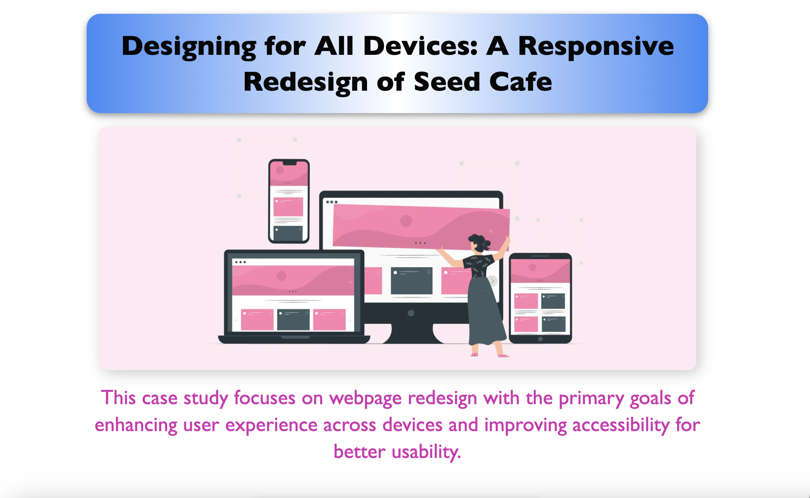

My process: I began by identifying usability and branding issues on the original Seed Cafe site, then created a consistent Figma prototype with cohesive colors, typography, and layout. I restructured key content
like hours and menu for better visibility, enhanced the cafe’s online identity with custom visuals, and emphasized improvement of visual hierarchy. By combining thoughtful visual design with accessibility principles, I created a site that’s not only more intuitive and inclusive, but also reflects the cafe’s unique identity with clarity and charm. I ensured the website was accessible by testing for color contrast, tab navigation, and responsiveness on three different screen sizes.
View Project